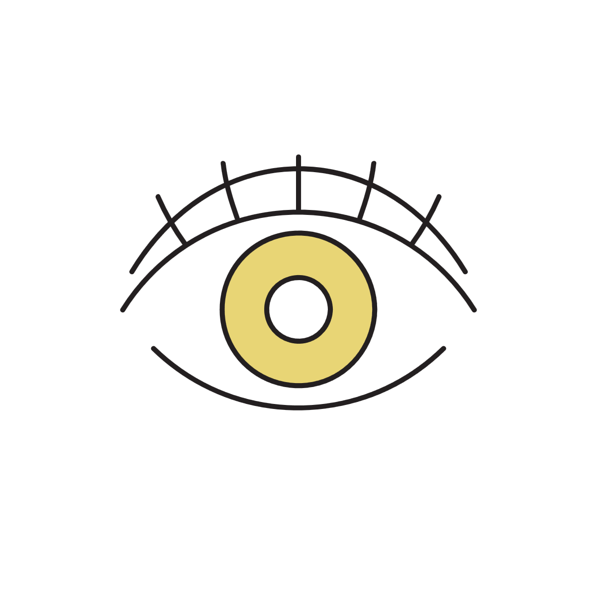
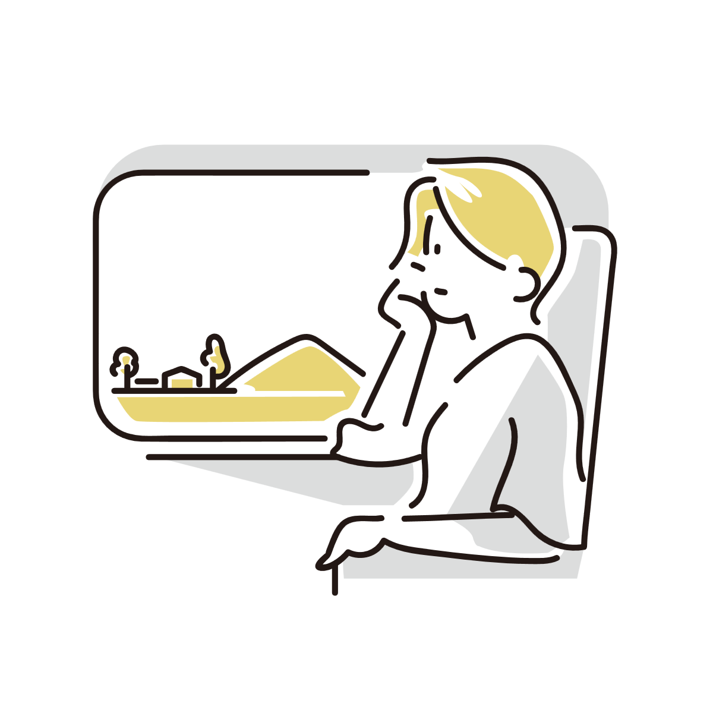

ゲームをしても目が悪くならない人がいるのはなぜ？
「ゲームばかりしていると目が悪くなる」と昔からよく言われます。
しかし実際には、長時間ゲームをしていても視力がほとんど変わらない人もいます。
一方で、それほどゲームをしていなくても近視が進む人もいます。
こうした違いを見ると、「本当にゲームだけが原因なのだろうか」と疑問に感じる人も少なくありません。
実際には、視力低下の仕組みは単純な「目の使いすぎ」だけでは説明できない部分があります。

「目を使う」とは何が起きているのか
近くを見るとき、目の中ではピントを合わせるための調整が行われています。
ゲームやスマホ、読書などでは近距離を見る時間が長くなるため、目の筋肉は長時間働くことになります。
そのため、「疲れ目」や一時的な見えづらさが起こることがあります。
ただし、ここで重要なのは、「疲れること」と「視力そのものが恒久的に悪化すること」は完全に同じではない、という点です。
近視は「単なる疲れ」だけでは説明できない
近視では、目の奥行きのバランスが変化し、遠くにピントが合いにくくなっています。
つまり、単純に「筋肉が疲れたから見えなくなる」というだけではありません。
実際には、成長期の目の変化や、長期間の生活環境などが複雑に関係しています。
そのため、「たくさん使った人全員が同じように悪くなる」という単純な仕組みにはなっていません。
「ゲーム＝即近視」ではない
ゲーム中は近くを見る時間が増えるため、近視リスクとの関連はよく話題になります。
ただし、それは「ゲームだけが直接視力を壊す」という意味ではありません。
実際には、睡眠、屋外活動、読書量、生活習慣なども含めて全体の環境が影響していると考えられています。
体質の違いも大きく関係している
同じようにゲームや勉強をしていても、視力の変化にはかなり個人差があります。
これは単なる「我慢強さ」の違いではなく、目の成長しやすさや近視になりやすさそのものに差があるためです。
実際には、家族に近視が多い人ほど近視になりやすい傾向も知られています。
ただし、これは「遺伝だけで全て決まる」という意味ではありません。
近くを見る時間、屋外で過ごす時間、睡眠や生活環境なども組み合わさりながら、最終的な視力変化が決まっていくと考えられています。
「ゲームをしても平気な人」が存在する理由
そのため、同じ時間ゲームをしていても、あまり視力が変わらない人がいる一方で、比較的短時間でも近視が進みやすい人もいます。
つまり、「ゲームをしたかどうか」だけで全員の結果が決まるわけではありません。
「昔はゲームで目が悪くなると言われていた」理由
昔のゲーム機やテレビは、現在より画面が粗く、ちらつきも強いものが多くありました。
そのため、長時間続けると疲れやすく、「目に悪い」という印象が強く残りやすかった面があります。
また、子どもが長時間ゲームを続ける生活自体への心配もあり、「ゲーム＝視力低下」という形で語られやすくなりました。
ただし現在では、近視はより複雑な要因で進行することがわかってきています。
「画面を見ること」より大事なこともある
近年では、屋外で過ごす時間の少なさが近視と関係している可能性も注目されています。
明るい環境で遠くを見る時間が減ることが、目の成長へ影響しているのではないかと考えられています。
つまり、「ゲームをやめれば全て解決」というより、生活全体のバランスを見ることが重要だと考えられています。

「目が悪くならない人」は無敵というわけではない
ゲームを長時間しても近視が進みにくい人はいますが、それでも目の疲労がゼロというわけではありません。
乾燥、まばたき減少、肩こり、頭痛などは起こることがあります。
また、今は問題なくても、成長や生活変化によって視力が変わることもあります。
そのため、「自分は平気だから完全に無関係」とは考えないほうが自然です。
目を守るためにできること
長時間近くを見続けないことは、疲労軽減という意味では役立ちます。
ときどき遠くを見る、部屋を明るくする、姿勢を固定しすぎない、といった小さな工夫でも負担は変わります。
また、睡眠不足は目の疲れを強めやすいため、休息も重要です。
「ゲームだけを悪者にする」というより、目全体の使い方を考えるほうが、現在の理解には近いと言えます。
参考情報と注意点
視力変化には個人差があります。急激な視力低下や強い違和感がある場合は、眼科への相談も検討してください。
関連アイテム
 | 価格:3300円 |